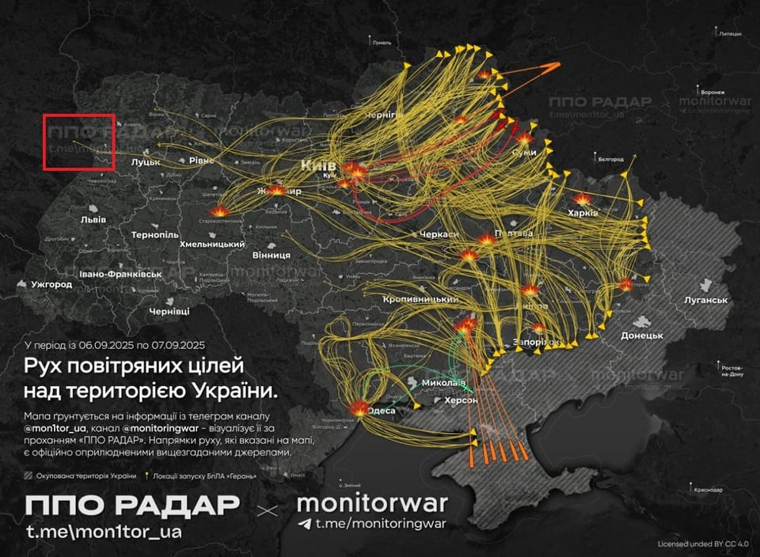

世界苦茶09月08日新闻 | 32条 | 日本首相石破茂宣布辞职

日本首相石破茂宣布辞职 | 美國称将施压俄罗斯 | 武汉再陷媚日荒唐指控 | 中国宣布制裁日籍华人国会议员
苦茶数据
美元兑人民币：7.13（昨日7.12，前日7.12）
美元兑日元：148.17（昨日147.07，前日148.20）
上证指数：3818（昨日3812，前日3781）
标普500指数：休市（昨日6481，前日6502）
比特币：111342（昨日110576，前日110871）
布伦特原油：66.30（昨日64.50，前日66.85）
中国新闻
• 中国外交部8日宣布对日本参议员石平采取反制措施： 冻结其在中国境内的动产、不动产及其他各类财产；禁止中国境内的组织、个人与其进行有关交易、合作等活动；对其本人及直系亲属不予签发签证、不准入境（包括香港、澳门）。外交部称石平长期在台湾、钓鱼岛、历史、涉疆、涉藏、涉港等问题上散布谬论，公然参拜靖国神社，严重违背中日四个政治文件精神和一个中国原则，严重干涉中国内政，严重损害中国主权和领土完整。
• 港拟扩学童防自杀 ：香港学童轻生个案数量维持在高水平，精神健康咨询委员会委员叶兆辉建议将“三层应急机制”扩展至小学五六年级，及早发现相关个案。据香港《明报》报道，香港教育局今年上半年接获17宗学生轻生身亡个案，开学前也有学童轻生。叶兆辉星期天接受无线节目《讲清讲楚》访问时说，冠病疫情影响学生的人际关系及社交网络，即使升上高年级后也未能完全修补，呼吁学校制造机会，让学生与学生之间、师生之间建立良好的关系。
• 重庆公安系统再震荡 ：重庆市公安巴南分局近期持续出现震荡，市公安局原一级巡视员何内平星期六官宣被查，意味着市公安巴南分局三个多月、两任局长接连落马。中共重庆市纪委监委星期六晚通报何内平被查的消息，指他涉嫌严重违纪违法。公开简历显示，65岁的何内平来自四川岳池县，中共市委党校大学学历。
• 武大红日座椅致歉 ：武汉大学开学典礼的座椅贴上红色标签后与日本国旗相似，被部分网民围攻，校方迫于压力致歉。武汉大学研究生开学典礼星期五在卓尔体育馆举行，现场工作人员在部分白色座椅靠背中央粘贴红色圆形标签，用于引导穿红色文化衫的学生就座。相关照片在网上流传，有网民认为，白色座椅贴上红色圆形标签后酷似日本国旗，批评武汉大学“九三阅兵刚过，就没有了政治敏感度”。也有网民认为，这只是个巧合，不应该上纲上线。
• 武汉市区撞人致7伤 ：中国湖北武汉市闹市区发生汽车撞人事件，造成七人受伤。网传视频显示，人来人往的闹市街道上，一辆黑色小轿车车体前部损坏，旁边有数名受伤的市民正在等待救治。武汉警方星期天在账号“平安江汉”上发布警情通报称，6日22时20分许，辖区花楼街交通路路口发生一起交通事故，造成七人受伤，均无生命危险。
• 辛芷蕾威尼斯封后 ：第82届威尼斯电影节9月6日颁奖，《日掛中天》辛芷蕾获最佳女演员。她是继1992年《秋菊打官司》巩俐、2011年《桃姐》叶德娴之后第三位荣膺威尼斯影后的华人女演员。
亚太印太新闻
• 英籍记者离台控干预 ：在台英籍记者认为台湾热情理性的公共讨论空间被极端言论与政治动员取代，新闻室受到政治干预，他与家人成攻击目标，无法承受下决心离开。据台湾《联合新闻网》报道，曾任台湾公营英语媒体TaiwanPlus编辑部高级主管的艾永青，近日发表题为《（我的）台湾大罢免》）文章，透露已于7月底与家人买了单程票返回英国。艾永青在台湾生活超过10年，他忆述一篇批评美国总统特朗普的报道遭不当撤下，他亲身感受到新闻室受到政治干预的压力，萌生离开想法。
• 菲启用吕宋海峡基地 ：菲律宾在吕宋海峡启用一座新的军事基地。分析人士指出，此举可能提升马尼拉监控吕宋海峡的能力，但也可能使马尼拉进一步卷入中国大陆与台湾未来的冲突。《菲律宾星报》报道，这座名为马哈塔的前沿作战基地位于巴丹岛，距离台湾仅193公里。这是菲律宾武装部队在具有战略意义的巴丹群岛进行的最大笔军事投资。尽管这座基地对中国大陆在吕宋海峡的海上活动影响甚微，但分析人士认为，这预示着马尼拉要通过军事建设来威慑北京，而不再寄望于保持中立能帮助马尼拉免于陷入未来的台海冲突。
• 石破茂宣布辞职 ：日本首相石破茂宣布辞职，外界推测可能接任首相的人选有五人。路透社报道，石破茂星期天宣布辞职，引发他所属自民党的领导人之争，胜者将面临议会选举，成为首相。由于执政联盟在参众两院都失去多数席位，自民党总裁不再能保证成为首相。不过，反对党领袖执政的可能也相当低。
• 韩对华团客试行免签 ：韩国政府将从9月29日起对中国团体游客试行免签入境政策，停留期限为15天。据韩国官媒韩联社报道，韩国法务部、文化体育观光部、外交部、国务调整室星期天联合发布计划，面向中国团体游客试行免签政策。根据计划，在今年9月29日至明年6月30日期间，中国团体游客如通过韩国政府指定的旅行社报名访韩，可享受最长15天的免签入境待遇，出入境需搭乘相同班机或船舶。
• 阿努廷出任泰国首相 ：泰国下议院秘书长阿巴宣布，泰国国王哇集拉隆功已批准任命阿努廷为泰国新首相。新华社报道，阿巴星期天在位于曼谷的泰自豪总部举行的仪式上，宣读皇家诏书。现年58岁的泰自豪党党魁阿努廷星期五在投选新首相的国会特别会议，以311票击败获得152票的为泰党候选人猜甲森，当选泰国第32任首相。
• 印拟建首艘核动力航母 ：印度政府可能会建造第三艘航母，是核动力航母。这是印度宣布的15年国防现代化计划的一部分，该计划还包括海军首次使用印度制造的战斗机。印度目前有两艘航母，一艘由俄罗斯制造，另一艘是国产。预计拟议建造的航母将是核动力的，是印度的第一艘核动力航母，具有更远的航程和更隐蔽的作战能力。印度还计划使用数量不详的新一代双引擎舰载战斗机和轻型战斗机。这两种飞机都是由国有的印度斯坦航空有限公司为海军研发的。还预计采购两套电磁弹射系统。这一系统专为美国海军研发，使用电磁力而不是传统的蒸汽弹射器从航母上弹射飞机。
• 传习特会或在韩举行 ：白宫消息人士披露，美国总统特朗普10月可能赴韩国出席亚太经合组织领导人峰会，期间与中国国家主席习近平举行会晤。如若属实，意味着特朗普今年1月重返白宫后的首场“习特会”将在韩举行。APEC峰会10月31日至11月1日在韩国庆州市举行。美国有线电视新闻网星期天引述三名特朗普政府官员称，特朗普和他的核心幕僚正低调筹备10月访韩事宜。
• 韩将包机接回被拘公民 ：韩国总统秘书室长姜勋植7日就300多名韩国公民被美国移民部门拘留事件表示，经有关部门、经济团体、企业的迅速应对，关于被拘人员的释放交涉工作结束。目前还剩下行政方面的程序，待流程结束之后，政府将派包机接回上述人员。为了防止类似事态重演，政府还将检查和改善为落实对美投资项目而出差人员的签证办理机制。美国移民与海关执法局、国土安全调查处等执法机构周四对位于佐治亚州萨凡纳的现代汽车集团 — LG新能源合资电池厂施工现场开展非法滞留人员打击行动，LG新能源以及合作企业员工等共有300多名韩国公民被美方拘留。
• 韓國稱美國公開工人被捕視頻令人遺憾： 韓國方面表示，美國政府公開數百名韓國工人被捕的影像令人遺憾，尤其是這一事件緊隨兩國領導人峰會之後。週四，美國移民官員突襲了現代汽車的一家汽車電池工廠。週五，美國移民與海關執法局發布了一段視頻和一些照片，顯示工人手腕、腰部和腳踝都被鐐銬固定，在突襲後登上一輛大巴。這一鎮壓行動可能會損害華盛頓與首爾之間的關係，而首爾既是美國的重要亞洲盟友，也是投資方；此時雙方正試圖縮小分歧，並在峰會之後完成貿易協議。韓國第一副外長朴允珠在週六晚間的一份聲明中表示，她在與美國政務次卿艾莉森·胡克通電話時指出，此事件“發生在一個關鍵時刻，兩國領導人通過首次峰會建立起來的信任與合作動能亟需維持”，令人遺憾。
科技新闻
• 谷歌Gemini限额公布 ：直到最近，Gemini聊天助手在不同订阅层级下的使用限制仍不清楚。幸好，谷歌终于更新了其帮助中心文章，详细介绍了Gemini应用对 Google AI 订阅者的限制和升级。诸如 “有限访问” 这类的无用描述，或是“我们有时可能不得不在特定时间段内限制您可使用的提示次数、对话数量或某些功能的使用频率”这类模糊表述已不复存在。取而代之的是明确说明：免费账户每天可使用Gemini 2.5 Pro多达五次提示，AI Pro计划为100次，AI Ultra计划则为 500 次。免费账户还被限制为每天五个深度研究报告和 100 张生成图片。升级到 Pro 或 Ultra 账户可获得 1,000 张图片。
• TikTok称欧洲月活超2亿 ：中国短视频应用平台TikTok周五表示，其在欧洲拥有超过两亿月活跃用户，约占欧洲大陆三分之一人口，这是其在青少年群体中快速增长的最新迹象。该数据较去年32个欧洲国家的1.75亿用户有所增长。字节跳动旗下TikTok的一位发言人表示，该应用全球月访问用户已突破10亿。虽然该公司在全球面临监管挑战，但尤其遭到美国总统特朗普的强烈反对，他正推动其在美国资产的剥离。
财经新闻
• 美拟与欧加压俄 ：美国财政部长贝森特星期天说，华盛顿准备“加大对俄罗斯的压力”，敦促欧洲也采取行动，真正迫使莫斯科坐上谈判桌。据路透社和法新社报道，贝森特在美国全国广播公司的“与媒体见面”节目中说，美国总统特朗普及副总统万斯星期五与欧盟委员会主席冯德莱恩进行了“非常富有成效的通话”，他也与冯德莱恩作了交谈。贝森特说：“我们在讨论欧盟和美国可以合作做些什么。我们准备加大对俄罗斯的压力。（翻評：美國語境下對俄羅斯加壓的方式可能是指對印度制裁，而不是對俄羅斯制裁。）
• 产油国拟再增产 ：全球主要产油国预计将再次增产，这一动向将在这星期于新加坡举行的亚洲最大石油行业盛会上成为核心议题。市场担心，随着供应不断增加，未来油价可能承压。石油输出国组织与盟友今年早些时候，已经放弃长期以来“托底”油价的政策，转而通过增产来维护市场份额。据知与会者透露，成员国已原则上同意下个月再增加约13万7000桶石油产量。若决定属实，将令参加亚太石油会议的交易员与高管，必须应对今年第四季至2026年，全球原油供应量过剩的局面。
俄乌战争
• 俄羅斯對烏克蘭發動最大規模空襲，點燃政府大樓： 澤連斯基表示，他正指望美國能做出強有力的回應。此前，美國總統唐納德·特朗普向記者暗示，他可能願意對俄羅斯實施更多制裁。自8月15日特朗普與俄羅斯總統普京會晤未能在停火問題上取得突破後，俄羅斯加大了對烏克蘭的攻勢。週日對基輔的襲擊後，可以看到火焰從市中心烏克蘭部長內閣大樓屋頂竄起——這是三年半衝突以來該建築首次被擊中。據烏克蘭緊急服務部門表示，無人機襲擊還損壞了首都的多棟高層建築。
• 俄袭乌波兰战机升空 ：俄罗斯大规模袭击乌克兰，导致乌克兰政府大楼首次遭到袭击，波兰及盟军也紧急出动战机确保波兰领空安全。路透社报道，作战司令部星期天在社交平台发文称：“波兰及盟军飞机正在领空执行任务，同时地面防空和雷达侦察系统已进入最高戒备状态。”格林尼治时间零时30分，乌克兰空军发出俄罗斯导弹和无人机袭击警告，几乎整个乌克兰都处于空袭警报之下。
• 乌称拦下无人机与导弹 ：乌克兰空军9月7日表示，俄罗斯当天向乌克兰发射了810架无人机和13枚导弹，其中747架无人机和3枚导弹被拦截。袭击造成位于首都基辅的政府大楼受损。该大楼是乌克兰内阁及部长的所在地。袭击还造成4人死亡、44人受伤。俄罗斯国防部7日表示，当天使用高精度武器和无人机袭击了无人机组装和储存地点、乌克兰空军基地、工业设施等。俄罗斯坚称所有指定目标都被击中，没有打击基辅市内的其他目标。俄国防部称，俄罗斯防空系统6日晚至7日早在俄罗斯、克里米亚半岛和亚速海上空拦截了100架乌克兰无人机。乌克兰军方声称其袭击了俄罗斯的“友谊”输油管道，造成了“全面火灾破坏”。
• 特朗普準備就烏克蘭衝突啟動“第二階段”對俄制裁： 美國總統唐納德·特朗普週日表示，他準備對俄羅斯進入第二階段制裁，這是他迄今最接近表明將加碼制裁莫斯科或其石油買家的表態。特朗普多次威脅要對俄羅斯加強制裁，但一直有所保留，因為他正推動和談。最新表態顯示出更強硬的姿態，但特朗普並未明確表示已經做出決定，或說明“第二階段”將包括哪些措施。當白宮記者問他是否準備推進對俄“第二階段”制裁時，特朗普回答：“是的，我準備好了。”但他沒有進一步解釋。自上任以來，特朗普一直為無法結束烏克蘭戰爭感到沮喪，他最初曾預言自己能迅速結束這場戰爭。
• 乌称武器六成国产 ：乌克兰总统泽连斯基说，乌克兰军队使用的武器近60%是国产的，这已经超过他两个月前设定的目标。路透社报道，泽连斯基星期六在晚间视频讲话中说：“在这场战争中，乌克兰已经达到了这样的境地：我们拥有的武器，也就是我们士兵手中的武器，近60%都是乌克兰制造的。这些武器威力强大，具备许多先进性能。”泽连斯基也在讲话中，提到在丹麦进行武器生产的联合项目。
• 俄称可供华宽体机部件 ：美国总统特朗普提醒中国华盛顿在飞机零件等方面对北京掌握强大筹码，俄罗斯第一副总理曼图罗夫表示，俄罗斯已准备好向中国宽体飞机供应零部件，包括复合材料机翼和重型发动机。曼图罗夫星期六被问到，是否计划为中国宽体机供应零部件。俄罗斯卫星通讯社引述曼图罗夫回应说：“我们已准备好做这样的供应，首先是在我们擅长的范围，包括在MS-21项目下。我们所说的是一款复合材料机翼，以及一款基于PD-35燃气发生器、推力达26吨的重型发动机。“
国际新闻
• 美扩大职场执法 ：美国执法机构大规模突击搜查并扣押佐治亚州数百名无合法身份员工，包括韩国公民后，白宫高级官员说，特朗普政府计划锁定更多企业设施，加大对非法移民的执法力度。路透社报道，被称为美国“边境沙皇”的白宫边境事务主管霍曼星期天在美国有线电视新闻网的《国情咨文》节目中说，政府将进一步把重点放在工作场所。霍曼说：“我们将进行更多工作场所的执法行动。没有人是出于好心雇用非法移民。他们雇用非法移民是因为这些人肯做更辛苦的工作、接受更低工资，这削弱了雇佣美国公民的企业的竞争力。”
• 伦敦地铁五天罢工 ：英国伦敦地铁工人星期天起展开为期五天大罢工，罢工行动预料将使伦敦地铁瘫痪，对民众出行造成巨大影响。根据罢工行动，星期一至星期四伦敦地铁列车将几乎停运。开往希思罗机场的伊丽莎白线和地上铁路网络将正常运行，但部分车站服务将受到干扰，列车可能会非常繁忙。代表英国运输业工人的英国铁路、海事及运输工会说，伦敦地铁的轮班制度给员工的健康带来了负面影响，他们要求伦敦交通局把每周工时从35小时缩短至32个小时。
• 以称十万撤离加沙城 ：以色列总理内坦亚胡星期天说，在以军扩大对加沙地带的军事行动之际，已有约10万名平民离开加沙北部的加沙城。据《以色列时报》报道，内坦亚胡在星期天的每周内阁会议上说：“大约有10万人已经离开加沙。哈马斯正竭尽全力阻止他们离开，把他们留在那里充当人盾。”内坦亚胡办公室过后澄清，内坦亚胡指的是加沙城，而不是加沙地带。据联合国估计，约有100万名巴勒斯坦人还留在加沙城。随着以色列国防军朝加沙城中心推进，以色列正试图把当地平民疏散到加沙南部地区。
• 首位千禧圣人诞生 ：罗马天主教教宗良十四世星期天在圣伯多禄广场主持封圣大典，宣布两位青年楷模弗拉萨蒂和阿库蒂斯为圣人。其中，阿库蒂斯是首位“千禧世代”圣人。阿库蒂斯因致力于通过互联网传播天主教信仰，而有“上帝的网红”之称。阿库蒂斯的父母是意大利人，他于1991年在伦敦出生，在意大利北部城市米兰长大。阿库蒂斯每天都会去参加弥撒，并以善待受欺凌的儿童和无家可归者著称。他热爱电脑游戏，并自学编程，用来在网上记录奇迹和其他天主教信仰相关的内容。2006年，他因白血病去世，时年15岁。
• 伦敦示威890人被捕 ：伦敦警方星期天说，在周末举行的一场声援被取缔组织“巴勒斯坦行动”的示威活动中，共有890人被捕。法新社报道，警方说明，其中857人因在星期六的游行中支持被禁组织，违反《2000年反恐怖主义法》被逮捕；另有33人因涉及其他违法行为被捕，包括袭击警员等。
• 特朗普言论引芝抗议 ：美国总统特朗普威胁要对芝加哥动用“战争部”，引发数千人参与新一轮抗议活动。法新社报道，特朗普星期六在社交媒体发文，将自己描绘成电影《现代启示录》中的一名美国军官，并写道：“我喜欢清晨驱逐出境的气味。”他也配上一张似乎是人工智能生成的图像，显示他身穿制服的照片，背景是火焰和芝加哥的天空。
• 卢拉表示，巴西不受干预 ：巴西总统卢拉说，巴西有能力自主治理，不需要外来干预。彭博社报道，卢拉星期六在独立日前夕的电视讲话中说：“巴西只有一个主人：巴西人民。”他说：“我们与所有国家都保持友好关系，但我们不接受任何人的命令。